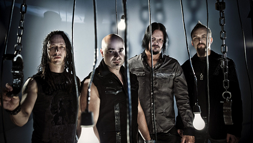
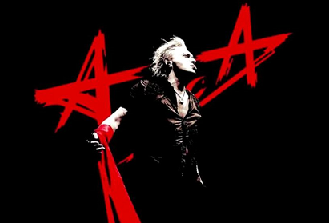
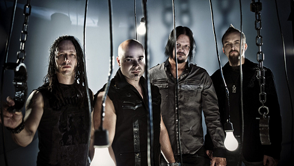
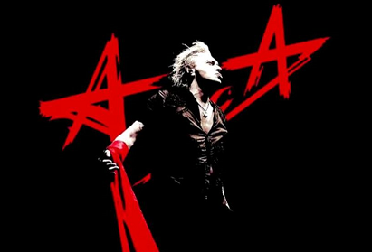

Обо мне
Резюме
2010 - 2014 с перерывами - верстальщик печатного издания
2015 - 2017 - рерайтер/копирайтер на text.ru и etxt.biz
Примеры того, как я когда-то умела писать, можно посмотреть здесь и здесь.
2020 - настоящее время - HTML-верстальщик
Увлечения
Мои увлечения весьма прозаичны, но в то же время довольно специфичны.
Я люблю хорошую музыку.
 



Я люблю хорошую литературу.
В общем, всё хорошее я люблю.
Навыки
Усидчивость
Обучаемость
Неконфликтность
Врождённая грамотность
Программы, языки, языки программирования
MS Word - знаю практически наизусть
PageMaker, InDesign - имею большой опыт работы
English intermediate
Nederlands basisgebruiker
Ελληνικα Α1
C for DOS
FoxPro for DOS
JavaScript
Образование
1996-1999 Магаданский политехнический техникум
Программное обеспечение для ЭВМ и АС
Техник-программист
2010 Усть-Лабинская РОО "Образовательный центр"
Курсы "Пользователь ПК"
2020 Интернет-колледж
Интенсив "Вёрстка" (HTML, CSS, JS)